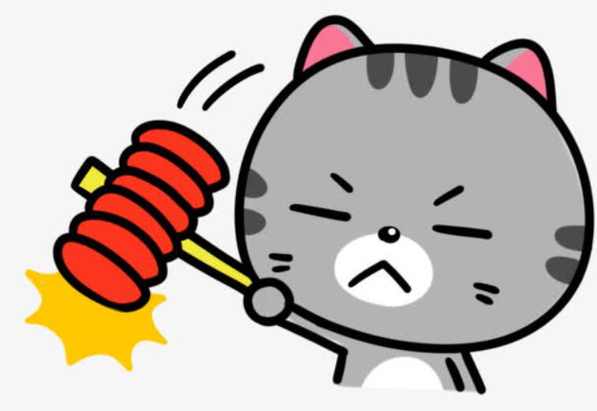
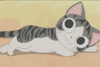
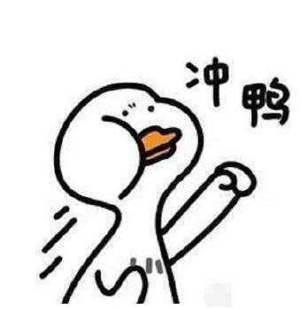

喵 呜~ 喵 帕 斯~！


一个普通的程序员，嗯…没错，这就是我对自己的定位…
苹果创始人乔布斯先生曾说过：把每一天当作生命的最后一天来过。
嗯…那岂不是可以天天泡在零食与可乐的海洋里，哇，怪不得乔布斯先生每天过的那么幸福，嘻嘻嘻（彻底没救了，捂脸ing...
没有轰轰烈烈的抱负，更没有壮志凌云的梦想，我一直觉得我只是一个普通人，既然是一个普通人就要履行作为普通人的职责——找一份普通的工作，组建一个普通的家庭，在一个普通的屋子里普通的过完一生。
生活从未给予我悲伤，那我何必自讨苦吃？攀比，嫉妒，在勾心斗角的生活中踽踽独行，只为了满足心中的欲望，对不起，这叭是我想要的生活。
我只是一个普通人，普通的因为他人无意的一句赞赏就会沾沾自喜，普通的因为他人的一句谎言而伤心良久，普通的想让自己周围的人变得更快乐，普通的想让自己每天过的更快乐，普通的笑着面对这个普通的世界。
我最理想的生活是坐在落地窗前，喝着咖啡，撸着怀里的猫，让阳光洒满全身，在猫疯狂抱怨怎么还不开饭的时候对着窗外傻笑，嘻嘻嘻…
喜欢音乐，因为音乐可以让我变得更安静…
喜欢电影，emm…因为看电影可以吃爆米花！（不接受反驳！没有电影的爆米花不叫爆米花！）
喜欢看书，各种各样的书，从历史到科幻到哲学到军事到言情等等等等，这就是好奇心太旺盛的下场！什么都想知道为什么唔…
喜欢旅游，从不计划行程，往往是突如其来的想法，于是背着包就出发~
喜欢游戏，只是单纯因为游戏能带给我很多快乐甚至让我知道很多知识，而且我一直觉得，游戏打的好的人干什么都会很优秀（没错就是我，快夸我快夸我）
痴迷于编程，当时老爹问我大学怎么规划的时候，想也不想的说：我要学编程！
喜欢电脑，于是想要了解电脑的原理，喜欢看着一个个功能从我手中实现，喜欢研究各种逻辑性强的东西。
我认为敲代码本来就是一件享受的事情，它会让一个人变得很放松，变得更加专注，变得更加安静，变得更加理性（虽然我本身是一个很感性的人，嘻嘻嘻）
与整个世界仿若隔绝的静谧，可以让一个人思考的更加深入，这种说不清的感觉就像烟瘾一样（虽然我没抽过烟，但看我老爹，emm...烟瘾应该是一个很大的瘾叭！），让我可以不断沉淀，沉淀，再沉淀…（然后睡着了雾…
至于为什么自学了前端死乞白赖的要搭建自己的博客网站出来，因为想听你们夸我鸭！以前你们夸我都没有一个专门的地方，只能在私下里偷偷的夸，这样我听不到，就不会沾沾自喜，于是我的博客小站就出炉啦！这样你们就有了一个专门夸我的地方，怎么样，是叭是很棒！耶！
嘛，有个能记录自己学习与成长的地方，感觉就像自己的小窝一样~
一点点的调界面，调后端，调接口，看着一个个功能逐渐实现，真的是一件很有成就感的事呢。
看着博客从一个白板变成了有着漂亮界面的网站（就是漂亮！我写的页面没一个丑的！超凶！rua！）
看着自己每天的进步，解决了一个又一个的BUG，为此由衷的感到喜悦。
每完成一个页面，做出一个功能都会对着电脑傻笑半天，我想，这就是热爱叭！
我喜欢敲代码的感觉，就像喜欢薯片和可乐一样，我不想成为他人眼中的技术大牛，我只想成为我自己的骄傲，给自己一份交代。
我知道现在的我还远远不够，但或许，下一秒的我，会够上那么一点点呢？以后的事，谁又能说得清。
大家对本博客有什么意见或者可改进的地方，哪里出了BUG之类的，都可以通过右上角的"反馈"反馈给我~（或者在留言板上给我留言）
我一定会不闻不…哦不，积极改进的！嘻嘻嘻~
另外，如果对本人有意见的，请拿零食砸死我叭！
你应该要学着做你自己
面对真实的自我
只要做到这一点
你就什么都不用惧怕
--- 《猫的报恩》